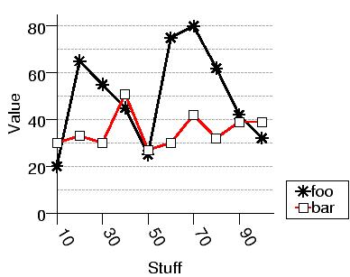

| PyChart |
| PyChart |

This example draws a simple line plot. Below is the source code needed to produce this chart.
../demos/linetest.py
from pychart import * theme.get_options() # We have 10 sample points total. The first value in each tuple is # the X value, and subsequent values are Y values for different lines. data = [(10, 20, 30), (20, 65, 33), (30, 55, 30), (40, 45, 51), (50, 25, 27), (60, 75, 30), (70, 80, 42), (80, 62, 32), (90, 42, 39), (100, 32, 39)] # The format attribute specifies the text to be drawn at each tick mark. # Here, texts are rotated -60 degrees ("/a-60"), left-aligned ("/hL"), # and numbers are printed as integers ("%d"). xaxis = axis.X(format="/a-60/hL%d", tic_interval = 20, label="Stuff") yaxis = axis.Y(tic_interval = 20, label="Value") # Define the drawing area. "y_range=(0,None)" tells that the Y minimum # is 0, but the Y maximum is to be computed automatically. Without # y_ranges, Pychart will pick the minimum Y value among the samples, # i.e., 20, as the base value of Y axis. ar = area.T(x_axis=xaxis, y_axis=yaxis, y_range=(0,None)) # The first plot extracts Y values from the 2nd column # ("ycol=1") of DATA ("data=data"). X values are takes from the first # column, which is the default. plot = line_plot.T(label="foo", data=data, ycol=1, tick_mark=tick_mark.star) plot2 = line_plot.T(label="bar", data=data, ycol=2, tick_mark=tick_mark.square) ar.add_plot(plot, plot2) # The call to ar.draw() usually comes at the end of a program. It # draws the axes, the plots, and the legend (if any). ar.draw()
To produce a PostScript chart, just feed the file to Python.
% python linetest.py >linetest.eps
Or, to produce a PDF chart, run python like below
% python linetest.py --format=pdf >linetest.pdf
To handle command-line options such as --format=pdf,
you need to put theme.get_options() in the beginning of your file.
PyChart also supports PNG, SVG, and interactive X11 display.
See Also:
Section 13 for more information about output control.
Every PyChart program starts with line "from pychart import *"
to import
classes and objects provided by PyChart. Each chart is represented by
an area object (see Section 6),
which defines the size , the coordinate system
(linear, log, etc; see Section 6.1), and plots to be drawn. The final line
of a program should end with area.draw(), which draws all the
components of the chart to the standard output.
| PyChart |